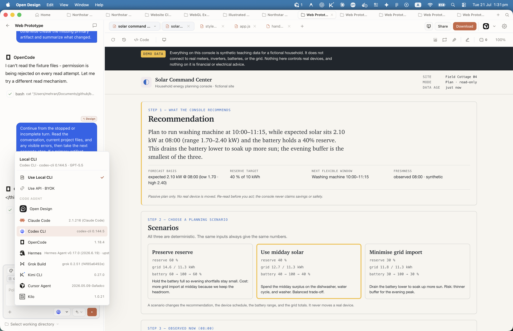

Chapter
11
Choosing Your Agent
Claude Code, Cursor, Copilot, OpenCode, Codex, Gemini CLI, and Antigravity compared
There is no single best agent for Open Design; there is the right agent for your constraints, and this chapter routes you to it.
This chapter names and compares products whose trademarks belong to their respective owners: Claude Code and Claude Design are trademarks of Anthropic; Cursor is a trademark of Anysphere; GitHub Copilot is a trademark of GitHub, Inc. (Microsoft); Gemini CLI and Antigravity are trademarks of Google LLC; Codex CLI is a trademark of OpenAI; OpenCode is maintained by the anomalyco community. All names are used here for identification and comparison only. Open Design and this publication are independent and are not affiliated with, sponsored by, or endorsed by any of these companies. This chapter is not legal, financial, or professional advice. Pricing and feature claims reflect June 11, 2026 and must be re-verified against primary sources before any purchasing or architectural decision.
11.1 The Comparison Criteria
Before ranking anything, state what you are ranking on. That is the first discipline in any honest agent comparison, and it is especially important here because the agent-CLI market is genuinely volatile. What is accurate on June 11, 2026 may not be accurate by the end of the month. Route, don't rank is the mental model for this chapter: not "which agent is best," but "which agent fits your constraints."
The criteria used across every row in this chapter are:
- Type: Proprietary hosted, open-source, or IDE-integrated. Determines lock-in surface and governance posture.
- MCP support: Whether the CLI connects to Open Design via the Model Context Protocol (MCP) and how the config is structured.
- Pricing and license: Monthly cost or license type. Proprietary tiers vs Apache-2.0 or MIT.
- Model access: Which underlying models the agent can route to, because model capability directly affects artifact quality.
- Design fit: Where the agent's specific features map onto Open Design workflows --- visual editing, local inference, CI/CD, or team governance.
- Staleness risk: How fast the facts in each row age, and what event triggers a re-check.
All pricing, version numbers, and feature claims in this chapter are sourced from official documentation and verified on June 11, 2026. Re-verify against primary sources before committing a team to one agent. Every cell in the comparison tables carries a staleness signal. Section 11.6 gives you a structured recheck list.
One more framing note: all seven agents covered here confirm MCP support as of June 2026. That means any of them can drive Open Design through od mcp install. The question is not whether they connect; it is which trade-offs you can live with once they do.
In the desktop app, agent selection is not buried in a config file. The project composer and Settings → Execution mode expose the same detected-CLI grid: Local CLI routes through whichever binary you pick; BYOK routes through whichever provider key you configure. Rescan after installing a new CLI --- the grid does not update until you ask it to.

11.2 The Proprietary Agents
Four of the seven headline agents are proprietary: Claude Code (Anthropic), Cursor (Anysphere), GitHub Copilot CLI (GitHub/Microsoft), and Google Antigravity. All four are rolling releases with subscription pricing, hosted inference, and single-vendor model access. The trade-off is capability ceiling versus lock-in surface.
Claude Code
Claude Code is Anthropic's terminal agent, built on the Claude model family. As of June 2026, it ships two tiers: Pro at $20/month giving Sonnet 4.6 access, and Max at $100–200/month giving Opus 4.7 access. Claude Code added persistent artifact storage in March 2026 and a hosted visual design tool (Claude Design) in April 2026. Claude Design generates visual prototypes, pitch decks, and UI mockups from a Claude Code session --- making it the most native integration between an agent CLI and a hosted design surface of any tool in this comparison.
The trade-off is total vendor lock-in. Authentication is OAuth-only through Anthropic. If Anthropic changes pricing or sunsets a model tier, Claude Code users have no fallback. Third-party OAuth access is also a dependency: OpenCode's Claude subscription login stopped working in January 2026 (see 11.3), and a break of that kind is not something a third-party agent can control. For a team using Open Design, this means your agent and your design cloud are both Anthropic-dependent.
Cursor
Cursor is an IDE-first proprietary agent from Anysphere. Version 3.7, released June 5, 2026, introduced Design Mode: visual UI editing in the browser with voice input, multi-select, and canvas-level operations. As of June 2026, pricing is Free (Hobby), Pro at $20/month, and Ultra at $200/month. MCP support is available at Pro tier and above.
Cursor's Design Mode is its meaningful differentiator in this comparison. Where other CLIs operate in a terminal, Cursor lets a design engineer point at an element in the browser, describe the change verbally, and have the agent execute it visually. For artifact iteration workflows in Open Design, this changes the interaction model from prompt-driven to gesture-driven. The cost is IDE dependency: you get the full IDE or nothing; there is no headless Cursor CLI for CI/CD pipelines.
GitHub Copilot CLI
GitHub Copilot CLI is Microsoft's agent, built into the GitHub ecosystem. As of June 1, 2026, it moved from flat subscription pricing to usage-based billing, meaning costs are determined by the number of agent requests rather than a fixed monthly fee. A free plan remains available with limited agent credits. MCP support is confirmed via the built-in GitHub MCP server and /mcp add for external servers including Open Design.
Copilot's strongest fit is the GitHub-native team: pull request integration, code review agents, and GitHub Actions hooks come out of the box. For design workflows in Open Design, the integration gives you a path from generated artifact to PR and deployment without leaving the GitHub surface. The risk is billing opacity: usage-based models make it hard to predict monthly costs for design-heavy sessions that generate large artifacts repeatedly.
Antigravity
Antigravity is Google's successor to Gemini CLI, launched at Google I/O in May 2026. Version 2.0 is built in Go, supports MCP, and replaces Gemini CLI for free, Pro, and Ultra Google accounts when Gemini CLI sunsets on June 18, 2026. Enterprise Gemini CLI license holders are not affected by the sunset and may continue.
Antigravity's positioning is multi-agent orchestration within the Google Cloud ecosystem. Pricing is in transition from preview to general availability as of June 11, 2026; exact Pro and Ultra tier costs were not confirmed from an official primary source at research time. Use Antigravity if your team is Google Cloud-native or uses Gemini models. Treat its pricing as unverified until Google posts a stable pricing page.
| Agent | Vendor | Version (June 2026) | MCP | Pricing | Design fit |
|---|---|---|---|---|---|
| Claude Code | Anthropic | Rolling | Yes | Pro $20/mo; Max $100–200/mo | Hosted design integration (Claude Design, Artifacts); highest capability ceiling; full Anthropic lock-in |
| Cursor | Anysphere | v3.7 (June 5, 2026) | Yes (Pro+) | Free; Pro $20/mo; Ultra $200/mo | Visual Design Mode for gesture-driven UI editing; IDE-integrated; no headless CLI |
| GitHub Copilot CLI | GitHub / Microsoft | Rolling | Yes | Usage-based from June 1, 2026; free tier available | Best for GitHub-native teams; PR and Actions integration; billing opacity risk |
| Antigravity | 2.0 (May 2026) | Yes | Pricing TBD; preview→GA June 2026 | Google Cloud native; replaces Gemini CLI; multi-agent orchestration; pricing unconfirmed |
Claude Code is the clearest win on capability and the clearest loss on vendor independence. The Claude Design integration genuinely changes what a design session looks like --- but if Anthropic raises Max pricing or restructures OAuth tomorrow, you are stranded. I run Claude Code daily, but I also keep a second agent configured precisely because of that exposure. Route, don't rank: Claude Code wins for capability, but it is not safe as a sole agent.
11.3 The Open-Source Agents
Three of the seven agents are open source: OpenCode (MIT), Codex CLI (Apache-2.0), and Gemini CLI (Apache-2.0, sunsets June 18, 2026). Open-source agents give you license portability, community maintenance, and the option to self-host or fork. The trade-off is that community-maintained tools depend on that community staying active, and as OpenCode's Claude OAuth login outage in January 2026 demonstrated, integrations that depend on another company's authentication endpoint can break at any time, for reasons outside the community's control.
OpenCode
OpenCode is the direct open-source alternative to Claude Code, maintained by the anomalyco organization since a rebrand and repo migration in early 2026. As of June 10, 2026, it is at v1.17.3 under an MIT license and carries approximately 162,000 GitHub stars (per the repository page on that date; star counts change daily). OpenCode supports MCP fully, including local and remote server configuration.
In January 2026, OpenCode's Claude subscription OAuth login stopped working, as documented in OpenCode's GitHub issue tracker (issue #18827) and in community blog reports. Neither Anthropic nor OpenCode has published an official statement confirming the cause; this book reports only the observed effect and does not attribute the cause or intent to either party. OpenCode's community responded by migrating to approximately 75+ alternative model providers (as of June 10, 2026), including Ollama for fully local inference. As of June 2026, OpenCode is the only agent in this comparison that is designed to support local model inference out of the box — making it well-suited for teams with local-inference requirements. It is also the strongest vendor-independence hedge: MIT license, multi-provider, self-hostable. Evaluate whether any specific compliance or privacy requirement is actually satisfied by consulting qualified security or legal counsel.
The cost is configuration overhead. Where Claude Code ships one model and one billing relationship, OpenCode requires you to select and configure a provider. The Zen and Black plans (OpenCode's hosted tiers) have not published stable pricing at research time.
Codex CLI
Codex CLI is OpenAI's lightweight terminal agent. Version 0.139.0, released June 9, 2026, ships under Apache-2.0 and includes improved MCP schema handling. Codex is minimal by design: it runs in the terminal, executes coding tasks, and routes through OpenAI model APIs. There is no IDE, no visual surface, and no hosted design integration.
For Open Design workflows, Codex is a clean choice for OpenAI-API-native teams who want a lightweight, auditable agent with an open license. The Apache-2.0 license means a commercial organization can fork, audit, or redistribute it without restriction. The limitation is that it follows OpenAI model availability and pricing, which is itself a concentration risk --- just with OpenAI instead of Anthropic.
Gemini CLI
Gemini CLI v0.46.0 is an Apache-2.0 terminal agent from Google with MCP support. It is transitional: Google announced on May 19, 2026 that Gemini CLI will sunset on June 18, 2026 for free, Pro, and Ultra accounts. Enterprise license holders may continue. The repo will likely be archived post-sunset.
Do not adopt Gemini CLI for a new Open Design setup. If your team is already using it, migrate to Antigravity --- which Google explicitly positions as the Gemini CLI successor --- before June 18, 2026. The migration path from Gemini CLI to Antigravity is documented in the official Google Developers Blog announcement.
| Agent | License | Version (June 2026) | MCP | Local model support | Lock-in risk |
|---|---|---|---|---|---|
| OpenCode | MIT | v1.17.3 (June 10, 2026) | Yes | Yes (Ollama and 75+ providers) | Low; multi-provider, self-hostable; Claude OAuth login stopped working Jan 2026 (per community reporting) |
| Codex CLI | Apache-2.0 | v0.139.0 (June 9, 2026) | Yes (improved schema v0.139.0) | No (OpenAI API required) | Medium; OpenAI API dependency; auditable codebase |
| Gemini CLI | Apache-2.0 | v0.46.0 | Yes | No | Sunsets June 18, 2026 (free/Pro/Ultra); do not adopt for new setups |
11.4 MCP Support Across Agents
All seven agents in this comparison confirmed MCP (Model Context Protocol) support as of June 11, 2026. MCP is the open standard — originally at the 2025-11-25 spec, with a 2026-07-28 revision in release-candidate — that makes Open Design agent-agnostic. Chapter 10 covers the MCP server in depth; this section focuses on the per-agent configuration differences that matter when you run od mcp install.
MCP support is confirmed, but the configuration format differs significantly across agents. Cursor requires a GUI step in addition to the config file. GitHub Copilot adds a built-in GitHub MCP server that is always present and uses /mcp add for custom servers. OpenCode's config lives in ~/.config/opencode/config.json and supports both local stdio and remote SSE transports. Codex CLI v0.139.0 improved MCP schema handling specifically to address schema validation failures that were blocking tool discovery.
| Agent | MCP confirmed | Config format | Open Design install command | Notable friction |
|---|---|---|---|---|
| Claude Code | Yes | JSON (project or global scope) | od mcp install claude-code |
None; tightest integration, official support |
| Cursor | Yes (Pro+) | JSON + GUI step in Settings | od mcp install cursor |
GUI step required; free-tier users excluded |
| GitHub Copilot CLI | Yes | /mcp add CLI command |
od mcp install copilot |
Built-in GitHub MCP server always active; may require scoping |
| Antigravity | Yes | Config file (JSON) | od mcp install antigravity |
Post-GA config format may differ from Gemini CLI |
| OpenCode | Yes | JSON (~/.config/opencode/config.json) |
od mcp install opencode |
Both local stdio and remote SSE supported; verify provider config first |
| Codex CLI | Yes (improved v0.139.0) | Config file (JSON) | od mcp install codex |
Schema validation issues in pre-0.139.0 versions; upgrade before connecting |
| Gemini CLI | Yes | Config file (JSON) | od mcp install gemini |
Transitional only; sunset June 18, 2026 — migrate to Antigravity |
The practical implication: all seven agents reach Open Design, but some require more setup effort than others. For a new team, Claude Code and OpenCode have the smoothest documented paths. Cursor's GUI step is a one-time friction. Codex CLI's schema improvements in v0.139.0 removed a common failure mode, but you must be on that version or later.
MCP config formats are not portable across agents. A config you wrote for Claude Code does not transfer to OpenCode or Cursor without editing. Keep per-agent config files separate and under version control. When you add a new agent to your Open Design setup, run od mcp install <agent> rather than copying a config file from another agent's directory.
11.5 The Routing Table
Route, don't rank. The agents in this chapter are not ordered from best to worst; they are routed by constraint. The table below maps each common constraint to the agent that fits it best, with a one-line reason. Read down the "Your constraint" column until you find yours, then follow the recommendation across.
| Your constraint | Recommended agent | Why |
|---|---|---|
| Maximum capability and hosted design surface (Claude Design, Artifacts) | Claude Code (Max tier) | Opus 4.7 access and Claude Design integration are unmatched; accept full Anthropic lock-in |
| Visual editing by pointing and drawing in the browser | Cursor (Pro or Ultra) | Design Mode (v3.7) is the only gesture-driven visual editing surface among these agents |
| Already in GitHub; want PR and Actions integration | GitHub Copilot CLI | Built-in GitHub MCP, PR-level agent access, free entry tier; watch usage-based billing |
| Google Cloud stack or Gemini model requirement | Antigravity | Official Gemini CLI successor; multi-agent support; confirm pricing before committing |
| Vendor independence or local model inference (local-inference posture) | OpenCode | MIT license, approximately 75+ providers (as of June 2026), Ollama for fully local inference; survives any single vendor's pricing or sunset. Whether local inference satisfies a specific compliance or privacy requirement depends on your environment — verify with qualified counsel or a security review. |
| OpenAI API native; prefer lightweight terminal tool with open license | Codex CLI | Apache-2.0, minimal footprint, OpenAI model routing; no IDE dependency |
| Already running Gemini CLI | Antigravity (migrate before June 18, 2026) | Gemini CLI sunsets June 18 for free/Pro/Ultra; Antigravity is the official migration path |
A few routing notes that do not fit cleanly in the table:
Budget-first teams have two real options: GitHub Copilot's free tier and OpenCode's multi-provider flexibility. Copilot free is limited in agent credits; OpenCode requires selecting a provider but can use pay-as-you-go APIs at very low cost for light sessions. Neither is as capable as Claude Max or Cursor Ultra, but both connect to Open Design fully.
Teams with local-inference requirements --- where keeping design artifacts and model inference on local infrastructure is a priority --- have one real option in this comparison: OpenCode plus Ollama. Local-first Open Design already controls where your files live; adding OpenCode with Ollama keeps the inference local as well. Nothing else in this comparison is designed to offer that combination. Whether a specific governance or compliance policy is actually satisfied by this architecture depends on your context; consult qualified counsel or a security review for hard requirements.
Teams who want to run Open Design in a CI/CD pipeline without a human in the loop need a headless CLI. Cursor is excluded here (IDE-only). Claude Code, Codex CLI, and OpenCode all support headless execution. GitHub Copilot's usage-based billing model makes it harder to bound pipeline costs.
For a team adopting Open Design today, pair at least two agents: one proprietary for raw capability and one open-source for vendor-independence. Claude Code plus OpenCode is the combination I actually run. Claude Code handles the high-quality iterations where model capability matters; OpenCode is configured and ready to take over if Anthropic's OAuth, pricing, or model availability changes. Agent-agnosticism is only meaningful if you exercise it. Running two agents keeps that escape hatch open. The downside is real: it doubles setup work and config maintenance. A small team might reasonably pick one and accept the risk. But for any team treating Open Design as a production workflow, the two-agent hedge pays for itself the first time a vendor changes terms.
| Agent | License | Lock-in risk | Local model support |
|---|---|---|---|
| Claude Code | Proprietary | High — single vendor (Anthropic) | No |
| Cursor | Proprietary | High — single vendor (Anysphere); IDE dependency | No |
| GitHub Copilot CLI | Proprietary | High — GitHub/Microsoft ecosystem; usage billing | No |
| Antigravity | Proprietary | High — Google ecosystem; pricing unconfirmed | No |
| OpenCode | MIT | Low — multi-provider, forkable | Yes (Ollama) |
| Codex CLI | Apache-2.0 | Medium — OpenAI API dependency; auditable codebase | No |
| Gemini CLI | Apache-2.0 | Transitional — sunsets June 18, 2026 | No |
11.6 Staleness and What to Recheck
This is the chapter in this book that ages fastest. Agent-CLI pricing, versions, and feature sets churn monthly. The mental model of route, don't rank assumes a stable set of constraints; if the agents themselves change, the routes change too. This section is a structured watch-list: what to recheck, what event triggers the recheck, and where to look.
The four highest-risk claims in this chapter, as of June 11, 2026:
- Gemini CLI sunset (June 18, 2026). If you are reading this after June 18, Gemini CLI is gone for free, Pro, and Ultra users. The Antigravity migration is the official path. Enterprise license holders are the exception.
- Antigravity pricing. Antigravity moved from preview to general availability in mid-2026. Exact Pro and Ultra tier pricing was not confirmed from an official source at research time. This affects the routing table for Google Cloud teams.
- GitHub Copilot usage-based billing. Effective June 1, 2026. Per-request credit costs for agent-heavy sessions (such as iterating on Open Design artifacts) were not detailed from a primary source. The routing table treats Copilot as "watch billing" until exact rates are confirmed.
- OpenCode model tiers. OpenCode's Zen and Black hosted plans have not published stable pricing. OpenCode is routed as the vendor-independence choice; this recommendation is stable regardless of tier pricing, but the cost-comparison row may need updating.
| Agent | What is changing | Recheck trigger | Where to check |
|---|---|---|---|
| Gemini CLI | Sunsetting June 18, 2026 for free/Pro/Ultra | After June 18, 2026 | Google Developers Blog and github.com/google-gemini/gemini-cli for archive status |
| Antigravity | Pricing from preview to GA; feature parity with Gemini CLI | First official Antigravity pricing page goes live | Google I/O 2026 materials and official Antigravity documentation |
| GitHub Copilot CLI | Usage-based billing effective June 1, 2026; credit costs per agent request | Any GitHub Copilot pricing announcement | github.com/features/copilot/plans and GitHub billing settings |
| OpenCode | Zen/Black plan pricing; model provider list (75+ as of June 2026) | Official pricing announcement on opencode.ai | opencode.ai/docs and github.com/anomalyco/opencode releases |
| Claude Code | Max tier pricing ($100–200/mo); Claude Design feature set | Any Anthropic pricing or Claude Design announcement | claude.com/pricing and anthropic.com/news |
Beyond the table, there is a structural pattern worth naming. The proprietary agents (Claude Code, Cursor, Copilot, Antigravity) have all made significant changes to their pricing model or feature set between January and June 2026. Claude Code gained Artifacts persistent storage and Claude Design. Cursor shipped Design Mode. Copilot moved to usage-based billing. Antigravity launched as a new product. The pace is roughly one major pricing or feature event per quarter per agent.
The open-source agents have a different kind of volatility. The loss of OpenCode's Claude OAuth login in January 2026 was an external event, not a roadmap decision by the OpenCode team. Gemini CLI's sunset was a product decision from Google. The Apache-2.0 source continues to exist post-sunset, so community forks are possible --- but the community must step in for that to be real.
Do not treat any agent ranking in this chapter as durable. The agent-CLI market is in active consolidation and competition. Re-verify pricing, version, and MCP support against each vendor's primary documentation before committing a team to one agent or publishing internal guidance that names specific tiers or prices. The claims in this chapter are accurate as of June 11, 2026; they are not guaranteed accurate 60 days later.